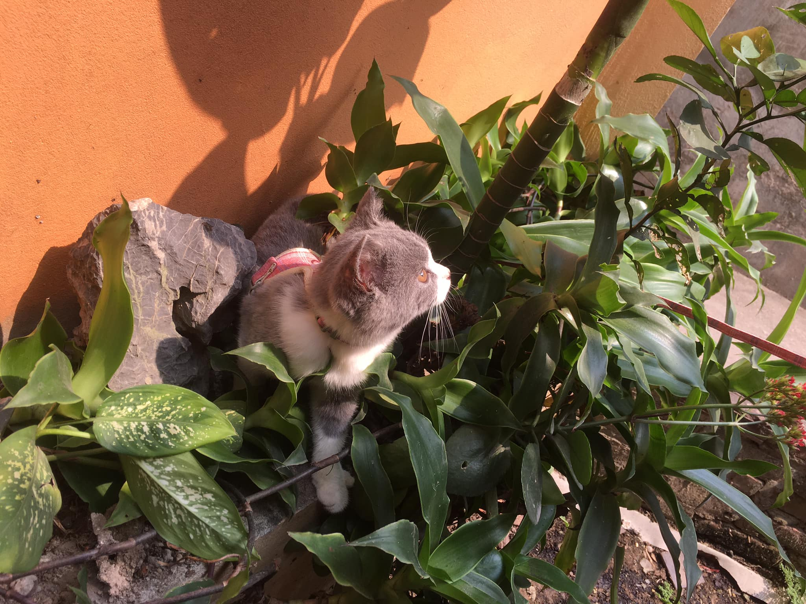

Barbara Cristine Barreto da Conceição
# 20/108, Silvio Romero St.
Santa Teresa - RJ
(21) 2252.3256/8754.8194 barbara
I worked in administrative and commer cial sectors of companies in different segments: In Public Health, as the buyer by Fiotec, given the national demands of FIOCRUZ. In the IT Department's Construtora Queiroz Galvão, I monitor ed the use of telephony and data,disputing charges and monitor compliance of contracts by the operators. Providing administrative and commercial supports to Connectcom-company and service. E desk IT infrastructure, given the contractual requirements of customers, especially PETROBRAS and CEF p In the Hirings Management, with auctions and other bidding processes about 2 years. As secretary of the Board and Management Events of the CASA JULIETA DE SERPA in advisory activities, purchasing, inventory management, cash flow, major suppliers, negotiations and internal and external communication: And, in the Credit and Collection area of the PETROBRAS DISTRIBUIDORA, with activitie s related to the sector.
Advanced MS Office- macros, pivot table, proche, charts, formulas, prese ntations, direct mail, etc.
Softwares : SAP, Microsiga, IBM Notes, ComprasNet, Petronect, etc..
Financial Skills : Financial Mathematics, Cash Flow Analysis and Cash Budget.
Bachelor's degree:
Business Management - Veiga de Almeida Unive rsity-2008
Education Teaching in M anagement (Pró-Docente) SENAI (completion date: Jul/2011)
English: Intermediate
Spanish: Basic knowledge
Microsiga Intermediate MS Project 2007- Intermediate MS Office XP Pro fessional Advanced SAP R3 and Business One- Advanced
Organizational ConsultingIARJ (CRA-RJ) Cash Flow-Catho Project Management-Catho JE CRM-Catho Human Resources FGV MS Project 2007 SENAI Business Budget-Catho + DC Technical Project Management-FGV Financial Analysis and Planning-SEBRAE
Sep 09 - Nov 09
Company : Fiotec - Heath Foundation
Function Technical Assistant (Buyer)
Purchase (consumables and laboratory and operational equipments) and service procurement , based on the Law 8666 and its own regulations, conducting consultations and negotiations with suppliers from various states, to serve the executed projects by FIOCRUZ Acquisition through purchases in the trade (goods of low costs) , made the price (value intermediate goods) and competition